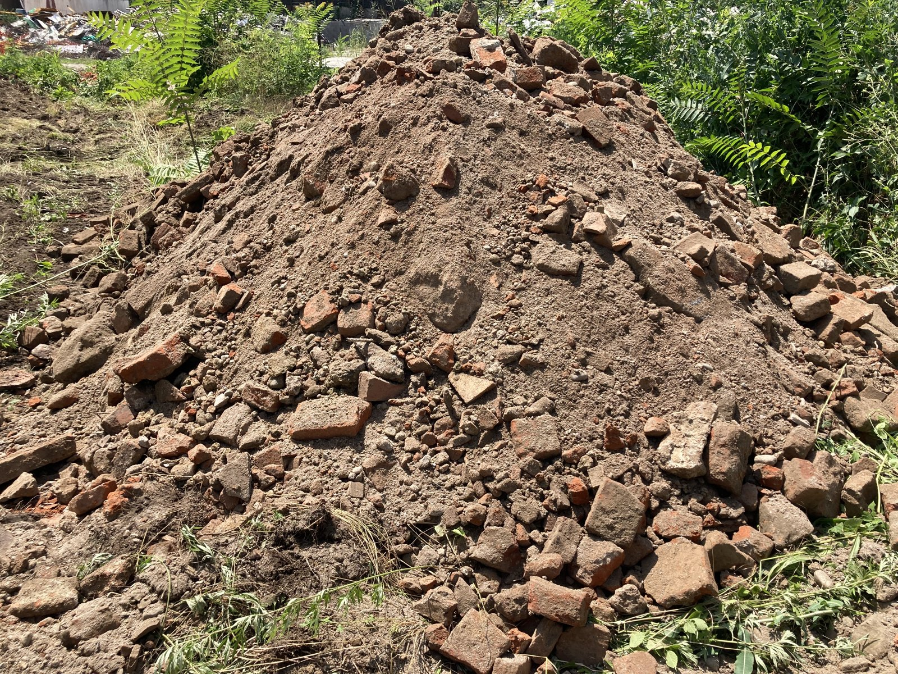

Cos'è e quando serveSapere cosa c'è nel sottosuolo, prima di decidere cosa fare
Prima di poter bonificare un sito, bisogna sapere con precisione dove si trova la contaminazione, quanto è estesa, a quale profondità arriva e con quali concentrazioni. È il compito della caratterizzazione ambientale: una sequenza di indagini in campo — sondaggi, piezometri, campionamenti di terreno e acque sotterranee — che trasforma un sospetto di contaminazione (spesso emerso da un'indagine preliminare o dalla storia industriale del sito) in un quadro conoscitivo verificato e cartografato.
La caratterizzazione serve in situazioni ricorrenti: quando un'indagine preliminare rileva superamenti delle Concentrazioni Soglia di Contaminazione e occorre delimitarne l'estensione; quando un sito cambia destinazione d'uso e serve verificare la compatibilità dei terreni con la nuova destinazione, più restrittiva di quella industriale originaria; quando un'area viene acquistata o venduta e la due diligence ambientale richiede di quantificare le eventuali passività; quando un ente pubblico, come un gestore di infrastrutture, deve verificare la qualità dei suoli lungo un tracciato prima di scavare.
Il passo successivo, quando la caratterizzazione conferma una contaminazione, è l'Analisi di Rischio sanitario-ambientale sito-specifica: non un semplice confronto con una tabella di limiti, ma una modellazione che stima se e quanto quella contaminazione rappresenta un rischio reale per le persone che frequentano o frequenteranno il sito.
Il quadro normativo
Il percorso della caratterizzazione è disciplinato dall'art. 242 comma 3 e dall'Allegato 2 alla Parte IV del D.Lgs. 152/2006. In pratica, il procedimento si articola in fasi successive: un'indagine preliminare ricostruisce il profilo storico del sito e individua i punti a maggior rischio; su questa base si costruisce un modello concettuale preliminare, un'ipotesi di lavoro su sorgenti, percorsi e possibili bersagli della contaminazione; il Piano di Caratterizzazione, che traduce questa ipotesi in un programma di indagini puntuali (numero e ubicazione dei sondaggi, profondità di campionamento, parametri da analizzare), viene approvato in Conferenza di Servizi prima di essere eseguito; i risultati delle indagini in campo permettono infine di costruire il modello concettuale definitivo del sito, la base su cui si imposta ogni decisione successiva.
Quando il modello conferma superamenti significativi, si procede con l'Analisi di Rischio sanitario-ambientale sito-specifica, disciplinata dall'Allegato 1 alla Parte IV del decreto secondo i criteri metodologici elaborati da APAT/ISPRA. L'analisi segue la catena sorgente — percorso — bersaglio: identifica dove si trova il contaminante, attraverso quali vie può raggiungere una persona (ingestione di terreno, contatto dermico, inalazione di vapori, lisciviazione verso la falda) e chi sono i soggetti effettivamente esposti in base all'uso attuale o futuro del sito. I parametri tossicologici e chimico-fisici dei singoli contaminanti sono attinti dalla banca dati ISS-INAIL, armonizzata a livello nazionale e allineata al Regolamento CE 1272/2008 sulla classificazione delle sostanze pericolose. Applicata in modalità inversa — partendo dal livello di rischio accettabile per risalire alla concentrazione corrispondente — l'Analisi di Rischio produce le Concentrazioni Soglia di Rischio, che diventano gli obiettivi di bonifica sito-specifici.
Per il calcolo utilizziamo Risk-net, sviluppato nell'ambito della rete RECONnet e validato come conforme al Manuale ISPRA, e ROME (Reasonable Maximum Exposure), il software di ISPRA. Impiegare due strumenti indipendenti sulla stessa sorgente non è ridondanza: permette di confrontare i risultati e di reggere il contraddittorio tecnico con gli enti di controllo, che verificano le elaborazioni con i propri codici. Dove il percorso di volatilizzazione è determinante, i dati misurati in campo con le indagini soil gas sostituiscono la stima modellistica a partire dalla concentrazione nel terreno: è la via che restituisce il quadro più aderente alla realtà del sito, ed è prevista dalle linee guida SNPA.
Come si procede in pratica
Nelle compravendite di siti industriali, la caratterizzazione si inserisce spesso nel percorso della due diligence ambientale: una Fase I documentale, che ricostruisce la storia del sito attraverso planimetrie storiche, autorizzazioni, immagini aerofotografiche e sopralluoghi visivi, senza ancora eseguire indagini in campo; e, dove la Fase I individua elementi di attenzione, una Fase II con sondaggi, campionamenti e analisi di laboratorio che quantificano l'eventuale contaminazione. Il risultato orienta la trattativa, il prezzo e le clausole contrattuali, e si intreccia con l'art. 245 del D.Lgs. 152/06 nei casi in cui l'acquirente non è responsabile di una contaminazione pregressa ma deve comunque valutarne l'impatto sull'operazione.
Su richiesta di tribunali, enti o parti private, prestiamo anche attività di perizia tecnico-economica e consulenza tecnica, sia di parte sia d'ufficio, in controversie che riguardano la stima dei costi di bonifica, la responsabilità della contaminazione o la conformità di un progetto alla normativa ambientale.
I nostri interventi
Per Metropolitana Milanese S.p.A. abbiamo condotto, tra la fine degli anni Novanta e i primi anni Duemila, le campagne di verifica della contaminazione dei suoli lungo sottopassi, cavalcavia e nuova viabilità a Milano; nello stesso rapporto di lungo periodo (1991-2016) rientrano il monitoraggio della barriera idraulica dell'area Concilio Vaticano II e lo studio di fattibilità di bonifica delle acque di falda contaminate da cromo VI dell'ex Galvanica Arturo Lorenzi.
L'area portuale di Taranto è stato il primo Sito di Interesse Nazionale affrontato dallo studio, agli inizi degli anni Duemila, un banco di prova per la gestione della caratterizzazione su scala industriale.
Nell'area Porto di Mare di Milano (2013), in custodia di Italia Nostra, abbiamo predisposto le indicazioni per l'Analisi di Rischio sito-specifica nell'ambito del progetto di ricerca Open Ground del Politecnico di Milano, individuando su cinque zone del sito rischi non accettabili per metalli e idrocarburi policiclici aromatici. In via Antonini 20 a Milano (2006-2025) abbiamo condotto un'indagine ambientale integrativa a supporto dell'Analisi di Rischio delle acque di falda, con la realizzazione di due nuovi piezometri per completare il quadro conoscitivo. Sull'ex Ospedali Riuniti, UMI 3 di Bergamo (2019-2025), dopo un primo progetto di bonifica non approvato per insufficiente caratterizzazione, abbiamo condotto una nuova campagna di indagini integrativa, definito il modello concettuale definitivo del sito e redatto il Progetto Operativo di Bonifica ai sensi dell'art. 242-bis.
Domande frequenti
Cos'è il Piano di Caratterizzazione e chi lo approva?
È il documento tecnico, previsto dall'art. 242 comma 3 e dall'Allegato 2 alla Parte IV del D.Lgs. 152/06, che pianifica le indagini in campo necessarie a ricostruire l'estensione e la natura della contaminazione di un sito. Viene redatto a partire da un modello concettuale preliminare del sito e approvato in Conferenza di Servizi prima dell'avvio delle indagini vere e proprie.
A cosa serve l'Analisi di Rischio sanitario-ambientale?
Serve a stabilire se e quanto la contaminazione rilevata rappresenta un rischio reale per la salute umana, seguendo la relazione sorgente-percorso-bersaglio: da dove parte il contaminante, come si muove nell'ambiente, chi può essere esposto. Applicata in modalità inversa, come previsto dall'Allegato 1 alla Parte IV del D.Lgs. 152/06, l'Analisi di Rischio calcola le Concentrazioni Soglia di Rischio, cioè gli obiettivi di bonifica sito-specifici.
Cos'è la due diligence ambientale e quando serve in una compravendita?
È la valutazione delle passività ambientali di un sito prima di acquistarlo o venderlo, condotta in due fasi: una Fase I documentale, che ricostruisce la storia industriale dell'area e i rischi potenziali senza indagini in campo, e una Fase II con sondaggi e analisi di laboratorio quando la Fase I individua elementi di attenzione. Il risultato orienta il prezzo di compravendita e le clausole contrattuali sulla responsabilità di un'eventuale bonifica.
Cosa succede se sono proprietario di un'area contaminata da altri?
L'art. 245 del D.Lgs. 152/06 non obbliga il proprietario non responsabile della contaminazione a bonificare, ma gli impone comunque di adottare le misure di prevenzione necessarie a evitare l'aggravarsi della situazione. Una caratterizzazione preliminare aiuta comunque a capire l'entità del problema e a valutare se convenga intervenire volontariamente, anche solo per liberare l'area dai vincoli che ne limitano la vendita o il cambio di destinazione.
Quanto dura una caratterizzazione ambientale?
Dipende dall'estensione del sito e dalla complessità del modello concettuale: un'indagine preliminare su un'area di poche migliaia di metri quadri richiede in genere settimane, mentre la caratterizzazione completa di un grande compendio industriale, con più campagne di indagine e il confronto con gli enti in Conferenza di Servizi, può richiedere mesi o, sui siti più complessi, anni.